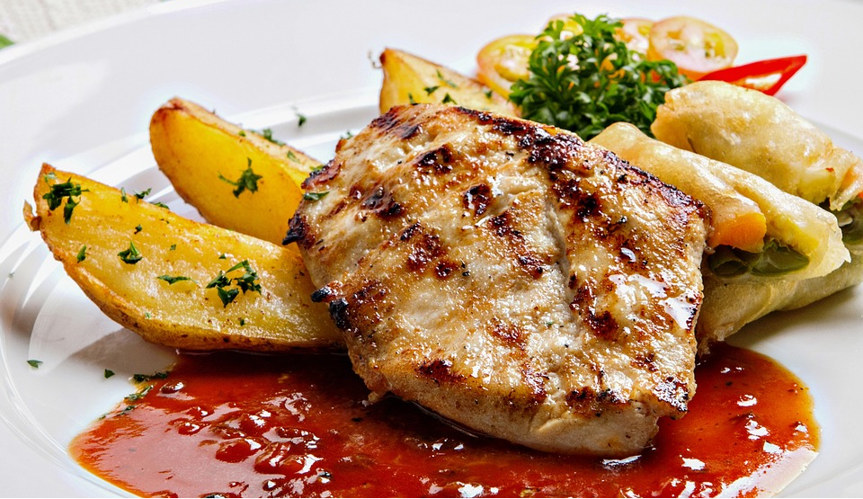

Ingredienser
- 900 g potatis
- 1 msk olja
- Salt och peppar
- Ca 900g kycklinglår
- 3 msk sweet chilisås
- 2 tsk soja
- 1 vitlöksklyfta
Gör såhär:
- Sätt ugnen på 225˚C och sätt in en långpanna.
- Tvätta och skär potatisen i halvor. Lägg potatisen i en bunke och ringla över oljan. Krydda med salt, peppar och blanda om.
- Lägg kycklingen i en bunke. Häll över sweet chili, soja och pressa i vitlöken. Blanda väl. Lägg kycklingen på ena halvan av den förvärmda plåten och lägg potatisen på den andra halvan. Stek mitt i ugnen ca 35 minuter.